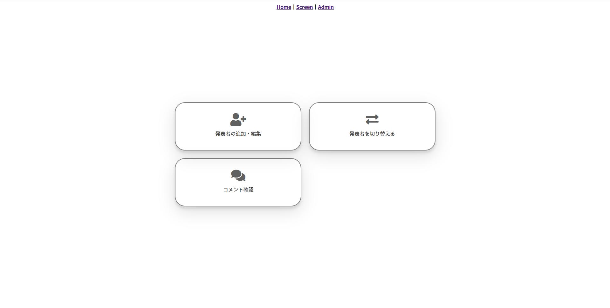
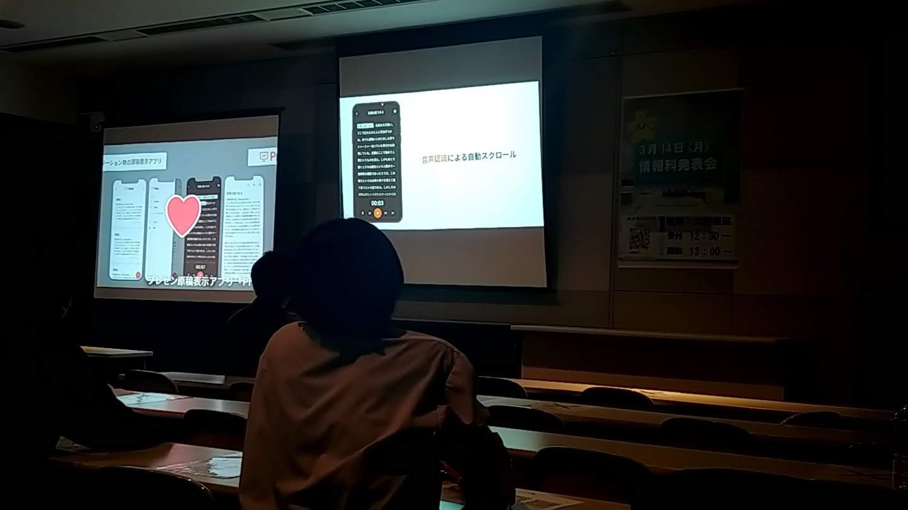
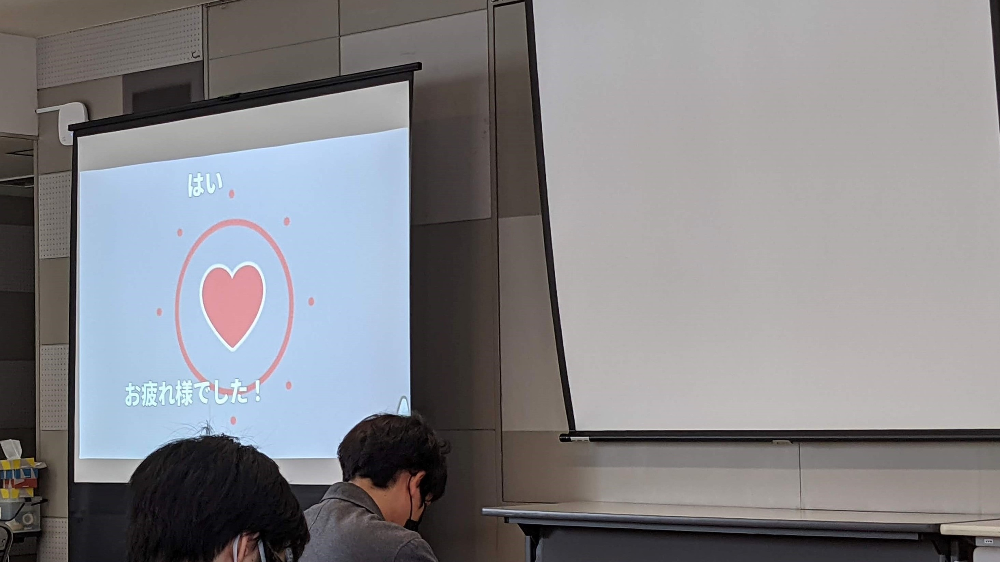
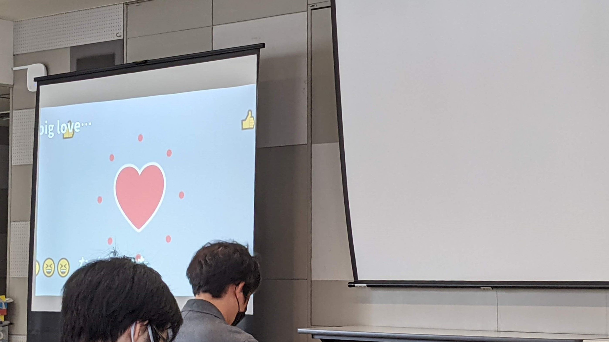

高校で一年に一回行われる「情報科発表会」で使用する、いいねボタン同期システムを開発しました。
発表について「いいね！」と思ったときにハートボタンを押すといいねが送れます。言葉で伝えたい時は、下の入力欄にコメントを入力して送信することで「コメントを送る」ことも可能です。
送ったいいねとコメントは全体のスクリーンにリアルタイムで表示され、発表の感想を会場内で共有することができます。
また、管理者画面にログインすることで発表者の追加・切り替え・コメントの確認等を簡単にできるようにしました。
当日は最大20台の同時リアルタイム接続数があり、合計3,967回のいいねと200個のコメントがスクリーンに流れました。
  